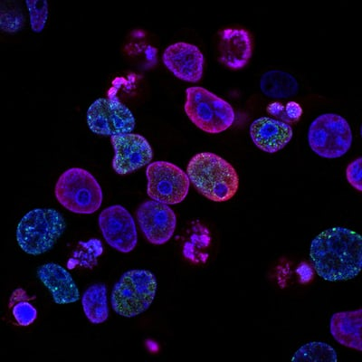
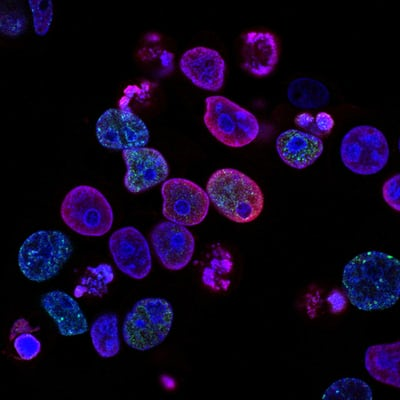

Personalized Heartbeat Meditation
♥Sync
Web Application Developmental Outline
Benefits of Meditation & Technology
Our everyday world is changing - we are finding more and more things to occupy our time and minds than ever before. From the political, environmental, and societal transformations to the newest phone releases and online streaming platforms, we are bombarded with stimuli that cannot only overwhelm, but be a significant detriment to our health and well-being. Simultaneously, we are at a defining moment in history in which the focus on individual health has never been more prominent.
Recent scientific research has revealed numerous factors affect our overall health including but not limited to:
- ♥ Exercise
- ♥ Diet/Nutrition
- ♥ Sleep
- ♥ Stress
- ♥ Biology
- ♥ Social Norms
- ♥ Daily Environment
Meditation is one behavior that can allow for individuals to process stress and improve health. Benefits of meditation include:
- ♥ Stress Reduction
- ♥ Anxiety Control
- ♥ Emotional Health/Mindfulness
- ♥ Increased Self-Awareness/Attenion-Span
- ♥ Memory-Loss Reduction
- ♥ Alters Addiction Behavior
- ♥ Natural Pain Management
- ♥ Improves Blood Pressure
Goals & Objectives
Technological advances have made web applications beneficial and effective tools in managing our health. There are applications for dieting, exercising, nutrition, sleep tracking, meditation and so many others! In addition, there are multiple medical devices that record an individual's heart beat and other health statistics such as the Stemoscope.
What if there was an application that provided an individual the opportunity to mediate to one’s own heartbeat? Or provides the option to combine and sync two heartbeats?
The goal of this web application is to provide both options for an individual’s meaningful individualized mediation.
- ♥ Provide user interface to allow for uploading sound files.
- ♥ Allow user to edit sound files (Play, Pause, Stop, Speed, Volume, White Noise Removal, Merge).
- ♥ Allow user to Save & Share files.


Research & Planning
Of the many lessons and tools provided by LaunchCode’s CoderGirl, one of the most valuable has been to start off small and build from that. A grand idea is nothing without basic functionality and implementation. I realize there is still much to learn! But even though it may seem daunting, I am optimistic this development plan will help provide a strong foundation on which to prepare this web application.
- ♥ Create Sitemap - how the site will be formatted.
- ♥ Prepare Layout and Visual Content - photos, videos, graphs, etc.
- ♥ Design Content and Prepare References.
- ♥ Coding Preparation - research possible API's to incorporate (Pizzacato), create file structure (including test spec and "README" files), set up server.
- ♥ Refine Coding - testing/reviewing/debugging/refactoring.
- ♥ LAUNCH!!!

 
